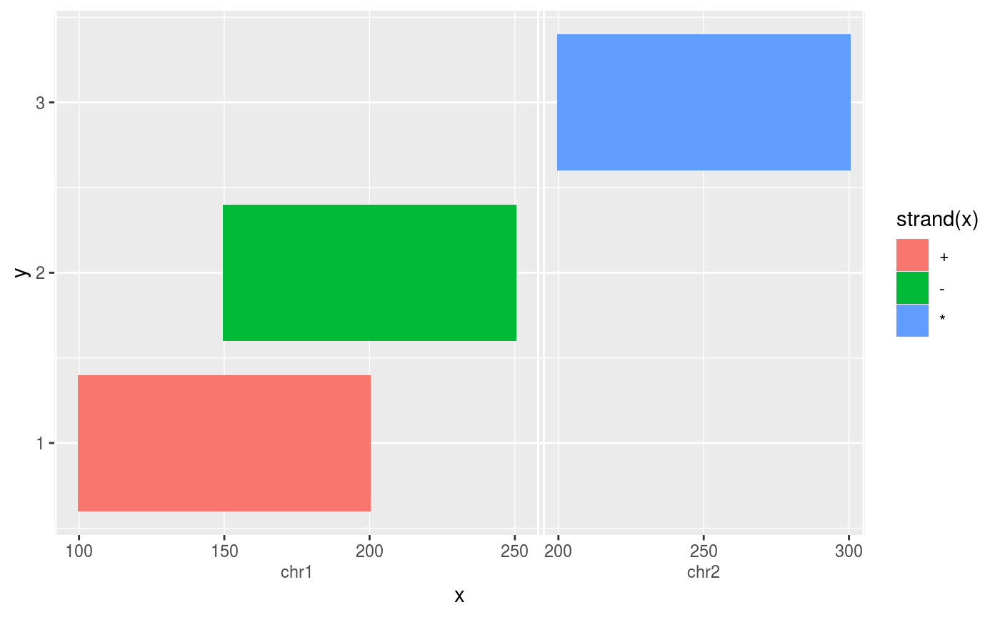

The ‘ggnomics’ package aims to provide tools for integrating Bioconductor S4 classes inheriting from the S4Vectors::Vector-class with the popular plotting library ‘ggplot2’. It does so by formulating scale and coordinate systems that are Vector aware, such that Vector classes can be shaperoned through the internals of ‘ggplot2’. Furthermore, it provides smooth transitions from Bioconductor infrastructure such as the S4Vectors::DataFrame-class to ‘ggplot2’.
Suppose we would want to make of some genomic ranges and colour them by strand. We’ll use the DataFrame class to organise our data and feed this directly into ‘ggplot2’ with their familiar syntax. Since ‘ggnomics’ operates mostly on the scale and coordinate level, all ggplot2’s layer functionality (geoms and stats), such as geom_tile(), are available to use with Vector classes.
library(ggnomics) library(GenomicRanges) df <- DataFrame( x = GRanges(c("chr1:100-200:+", "chr1:150-250:-", "chr2:200-300:*")), y = 1:3 ) g <- ggplot(df, aes(x, y, fill = strand(x))) + geom_tile(width = 0, height = 0.8) g

A few things are happening here under the hood. Because we provide a Vector class as ggplot()’s data argument, an S4-compatible cartesian coordinate system is added to the plot automatically.
g <- ggplot_build(g) print(class(g$plot$coordinates)) #> [1] "CoordS4" "CoordCartesian" "Coord" "ggproto" #> [5] "gg"
Since we’ve provided a GRanges class as the x-position, the decision is made to use scale_x_genomic() as the default scale for that aesthetic. This scale type comes with an guide that is aware of the different sequences the ranges are located to and displays the sequences next to one another.
print(g$layout$panel_scales_x) #> [[1]] #> <ScaleGenomic> #> Range: chr1:100-250 -- chr2:200-300 #> Limits: chr1:100-250 -- chr2:200-300
An effort is made to retain the S4 classes of data columns as long is feasible. This means that, unless a layer needs to transform values, the S4 classes are stable across the majority of plot building.
knitr::kable(g$data[[1]][,1:5])
| fill | x | y | PANEL | group |
|---|---|---|---|---|
| #F8766D | chr1:100-200:+ | 1 | 1 | -1 |
| #00BA38 | chr1:150-250:- | 2 | 1 | -1 |
| #619CFF | chr2:200-300:* | 3 | 1 | -1 |